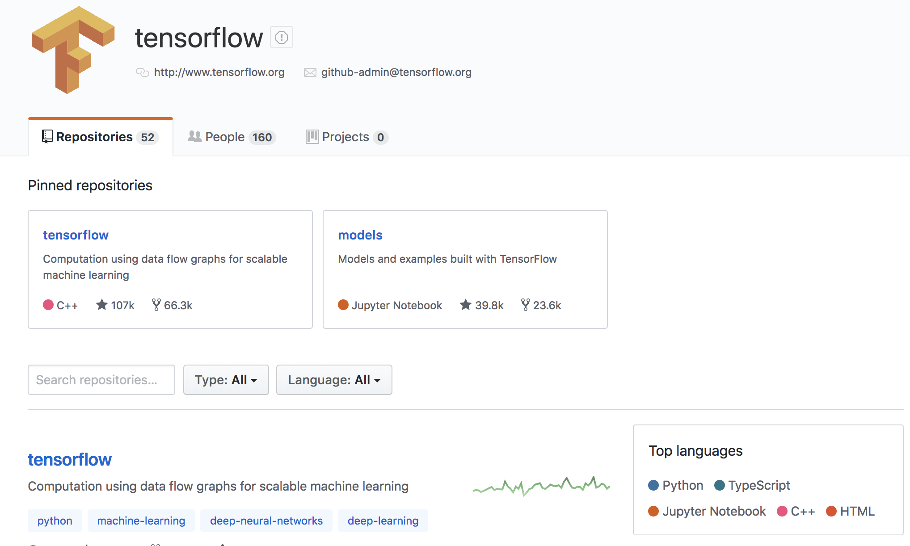
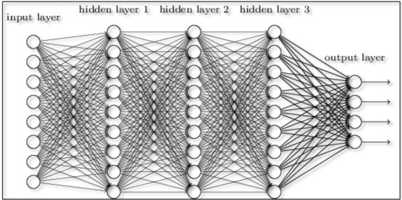
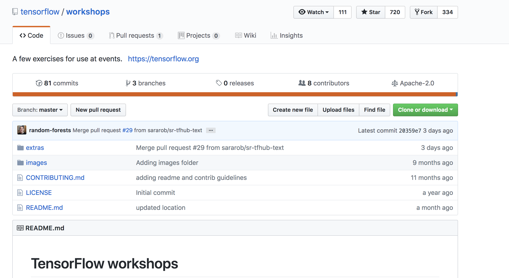

TensorFlow Tutorial¶
Open Source Software - Summer 2019
Wesley Turner
Rensselaer Polytechnic Institute
Department of Computer Science
Some material adapted from Olivier Poulin
Licensed under: CC-BY-SA 4.0 https://creativecommons.org/licenses/by-sa/4.0/
Reading Material¶
- TensorFlow Guide - (Reference Only)
https://www.tensorflow.org/guide
Read High Level APIs
Low Level APIs
Introduction¶
What is TensorFlow?¶
TensorFlow is an end-to-end open source platform for machine learning … that lets researchers push the state-of-the-art in ML and developers easily build and deploy ML powered applications. 1
TensorFlow™ is:
Open source
High performance numerical computation
Deploys on CPUs, GPUs, TPU
Desktops, clusters, mobile and edge devices
Originally developed by Google Brain team within Google’s AI organization
TensorFlow™ has:
Strong support for machine learning
Strong support for deep learning
Flexible numerical computation core
By the Numbers¶
Github page: https://github.com/tensorflow
Main repository: https://github.com/tensorflow/tensorflow
53,075 commits (now 61099)
27 branches (now 30)
1932 contributers (now 2095)
79 releases (now 88)
2021 Issues (now 2404)
Permissively licensed under Apache-2.0
Active community¶
Community overview: https://www.tensorflow.org/community/
Issue Tracker: https://github.com/tensorflow/tensorflow/issues
Others:
Twitter
YouTube
Release Notes
The Basics¶
Much of this section courtesy of Olivier Poulin, one of our mentors from last summer
Multiple Installations¶
Virtualenv
“native” pip
Docker
Source
For this class, we will use the Docker installation:
$ docker run -it -p 8888:8888 tensorflow/tensorflow
Unable to find image 'tensorflow/tensorflow:latest-devel' locally
latest-devel: Pulling from tensorflow/tensorflow
8ee29e426c26: Pull complete
...
9c2312dbc5d7: Pull complete
Digest: sha256:40844012558fe881ec58faf1627fd4bb3f64fe9d46a2fd8af70f139244cfb538
Status: Downloaded newer image for tensorflow/tensorflow:latest
________ _______________
___ __/__________________________________ ____/__ /________ __
__ / _ _ \_ __ \_ ___/ __ \_ ___/_ /_ __ /_ __ \_ | /| / /
_ / / __/ / / /(__ )/ /_/ / / _ __/ _ / / /_/ /_ |/ |/ /
/_/ \___//_/ /_//____/ \____//_/ /_/ /_/ \____/____/|__/
Docker:
Runs a TensorFLow Container
Bindings to Python
Maps port 8888 on the Container to port 8888 outside the container
Allows you to run Jupyter Notebooks
Starts up an interactive session
Validate¶
From the Docker container:
# python
Python 2.7.12 (default, Dec 4 2017, 14:50:18)
[GCC 5.4.0 20160609] on linux2
Type "help", "copyright", "credits" or "license" for more information.
>>> import tensorflow as tf
>>> hello = tf.constant('Hello, TensorFlow!')
>>> sess = tf.Session()
2018-08-09 19:31:10.894780: I tensorflow/core/platform/cpu_feature_guard.cc:141] Your CPU supports instructions that this TensorFlow binary was not compiled to use: AVX2 FMA
>>> print sess.run(hello)
Hello, TensorFlow!
What does TensorFlow do?¶
Similar to Numpy, for n-dimensional arrays, but TensorFlow simplifies creation of tensor methods and computes derivatives.
Numpy |
TensorFlow |
|---|---|
a=np.zeros((2,2)); b=np.ones((2,2)) |
a=tf.zeros((2,2)); b=tf.ones((2,2)) |
np.sum(b,axis=1) |
tf.reduce_sum(b,reduction_indices=[1]) |
a.shape |
a.get_shape() |
np.reshape(a, (1,4)) |
tf.reshape(a, (1,4)) |
b * 5 + 1 |
b * 5 + 1 |
np.dot(a, b) |
tf.matmul(a, b) |
a[0,0], a[:,0], a[0,:] |
a[0,0], a[:,0], a[0,:] |
Base usage involves making execution graph¶
TensorFlow uses a computation graph that has no numerical value until it’s evaluated.
Program structure has two phases: Construction phase and Execution phase.
Construction phase assembles the computation graph.
Execution phase runs the session object to execute all the operations in the graph.
What is Deep Learning?¶
Deep learning is a machine learning method.
More complex but has broader applications than classic task-specific algorithms.
It bases the construction of its models on networks observed in biological nervous systems.
Train Artificial Neural Networks to transform an input into a desired output.
Neural Network¶
A collection of units or nodes (artificial neurons, hence neural network)
Connected in layers to one another. Each node sends data to other nodes
Train the “weights” and “biases” on each neuron to slowly inch the network towards a specific functionality.
Simplest artificial neural network (ANN): Perceptron¶
Only binary inputs/outputs
Binary output means the signals between neurons can only be binary as well
Something either is, or isn’t
Limited in its functionality
Sigmoid Neurons¶
Inputs/outputs are any values between 0 and 1‘
Gives us much more nuanced outputs
Can be used for % matches
Deep Learning uses multiple layered networks¶
How to train your dragon (network)¶
Compare the output with training data
Get a vector of all the errors and compute the downward slope of the error curve (derivative)
Change the weights based on this “Gradient Descent”
Complicated in huge networks
A simple linear example¶
Simplifies everything!
Example: A simple linear regression!
Linear function y = ab+c
How do we train a simple network to mimic a linear function?
Where bias = 1. This function becomes y = xw2 + w1
Get set up¶
For OSX, you will need to install a few packages on the host first to get the plots at the end to work:
brew install socat
socat TCP-LISTEN:6000,reuseaddr,fork UNIX-CLIENT:\"$DISPLAY\" &
brew cask install xquartz
open -a Xquartz
Then set Allow connections from network clients in the pop up
Run a docker container and update it
docker run -it -p 8888:8888 -e "DISPLAY"=host.docker.internal:0 \
tensorflow/tensorflow:latest
apt-get update
apt-get install python-tk xterm x11-apps
xeyes & # Just a test to make sure our display is working
pip install matplotlib
Run a simple example¶
Imports:
import tensorflow as tf
import numpy as np
import matplotlib.pyplot as plt
Set up the system:
# Set up the data with a noisy linear relationship between X and Y
# y = -4x - 2 (gaussian, mean 0, stddev 1)
# bias is the coefficient of the contant term (1)
num_examples = 50
X = np.array([np.linspace(-2, 4, num_examples), \
np.linspace(6, -18, num_examples)])
X += np.random.randn(2, num_examples)
x, y = X
bias_with_x = np.array([(1.0, a) for a in x]).astype(np.float32)
Training parameters:
# Keep track of losses to plot later
losses = []
# How many iteration of training
training_steps = 50
# Learning rate (step size to control gradient descent). Too large
# and you may jump past minima, too small and it takes forever.
learning_rate = 0.002
Set up the TensorFlow graph:
with tf.Session() as sess:
# Set up all the tensors. The input layer is x and bias
input = tf.constant(bias_with_x)
# Our output are the y values as a column vector
target = tf.constant(np.transpose([y]).astype(np.float32))
# Weights are what we are changing. Initialize them to random
# values (gaussian, mean 0, stddev 0.1)
weights = tf.Variable(tf.random_normal([2, 1], 0, 0.1))
# Now initialize the variables
tf.global_variables_initializer().run()
Still within the with:
# with tf.Session() as sess:
#
# Set up the operations that will run in the loop
# For all x values, generate an estimate for y given our current
# weights. I.e. y^ = w2 * x + w1 * bias
yhat = tf.matmul(input, weights)
# The error is our estimate minus the measured
yerror = tf.subtract(yhat, target)
# Use the L2 magnitude over all estimates as the error function
loss = tf.nn.l2_loss(yerror)
# Now do gradient descent to optimize the weights.
update_weights = tf.train.GradientDescentOptimizer(learning_rate).\
minimize(loss)
Still within the with:
# with tf.Session() as sess:
#
# We have defined all the tensors, run the initialization and
# set up the execution graph to run the training data. Now repeatedly
# call the training operation to execute gradient descent and
# optimize the weights.
for _ in range(training_steps):
# Run an iteration of gradient descent
sess.run(update_weights)
# Save our loss magnitude so we can plot it later.
losses.append(loss.eval())
# When we are done training, get the final values for the charts.
betas = weights.eval()
yhat = yhat.eval()
Still within the with:
# Show the results
fig, (ax1, ax2) = plt.subplots(1,2)
plt.subplots_adjust(wspace=0.3)
fig.set_size_inches(10, 4)
ax1.scatter(x, y, alpha=0.7)
ax1.scatter(x, np.transpose(yhat)[0], c="g", alpha=0.6)
line_x_range = (-4, 6)
ax1.plot(line_x_range, [betas[0] + a * betas[1] \
for a in line_x_range], "g", alpha=0.6)
ax2.plot(range(0, training_steps), losses)
ax2.set_ylabel("Loss")
ax2.set_xlabel("Training steps")
plt.show()
Using TensorFlow¶
Tutorial¶
Of course, Google has us covered: https://www.youtube.com/watch?v=tjsHSIG8I08
Website from the video: https://github.com/tensorflow/workshops
Other links:
Cats versus Dogs (longer version) https://bit.ly/2G0bWNe